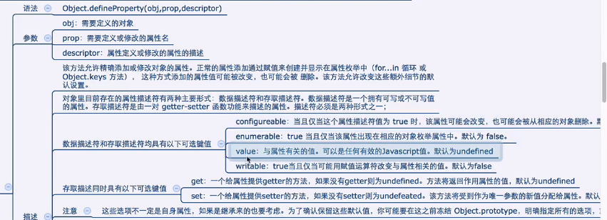
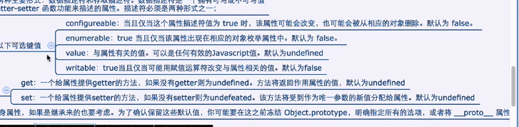

<!DOCTYPE html>
<html lang="en">
<head>
    <meta charset="UTF-8">
    <title>obj's attribute feature</title>
</head>
<script type="text/javascript" src="../../DebugUtils.js"></script>
<body>
<script>
  p('');
  enhance('Object.defineProperty(obj, prop, descriptor)');
  enhance('可以用来精确定义属性');
  enhance('属性的描述默认值是false或者undefined');
  enhance('用对象.或者动态加属性的方式加出来的属性特性默认值是true');
  p('');
  sep();

  var obj = {};
  Object.defineProperty(obj, 'x', {
    value: 12,
  });
  p(obj.x);
  obj.x = 456; // 尝试修改 -> 不成功
  p(obj.x); // 456
  p('对象用defineProperty定义出来的属性，默认能否遍历？');
  for (prop in obj) {
    p('对象用defineProperty定义出来的属性，默认能否遍历？: ' + prop);
  }
  p(Object.keys(obj));

  sep();

  Object.defineProperty(obj, 'y', {
    value: 56,
    writable: true, // 是否可写
    enumerable: true, // 是否可枚举
    configurable: false // 是否可配置, 如是否可以被delete
  })
  obj.y = 777;
  p(obj.y); // 777
  delete obj.y;
  p(obj.y); // 777

  sep();

  enhance('getter函数');
  Object.defineProperty(obj, 'z', {
    get: function () {
      return 123;
    },
    // writable: true // 不能这样定义: Cannot both specify accessors and a value or writable attribute, #<Object>
  });
  p(obj.z); // 123
  obj.z = 321;
  p(obj.z);

</script>
</body>
</html>